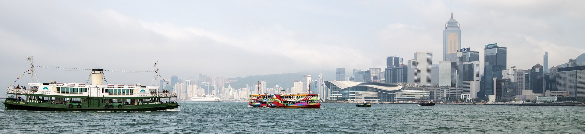

The Hong Kong Hidden Gem
About Hong Kong
 History
Hong Kong is a well-known global financial center. It was once a colony of the British Empire. In 1997, the British returned Hong Kong to China. Since then, Hong Kong has become a Special Administrative Region of China and is also known as the HKSAR.
Climate
Hong Kong is a warm and humid city. According to weatherspark.com, the average temperture is around 28°C from May to October and around 19°C from November to April. Humidity level is always around 70%-80% in most time of the year so you don't have to worry about dry skin!
Transport
As Hong Kong is a small city, there is no problems if you don't drive. The Mass Transit Railway (MTR) can take you to most places in the city with a reasonble price!
Safety
Hong Kong is a very safe city to visit. The Economist ranked Hong Kong the 8th safest city in the world!
Safest 10 Cities in the World:
- Copenhagen, Denmark
- Toronto, Canada
- Singapore, Singapore
- Sydney, Australia
- Tokyo, Japan
- Amsterdam, the Netherlands
- Wellington, New Zealand
- Hong Kong, China
- Melbourne, Australia
- Stockholm, Sweden